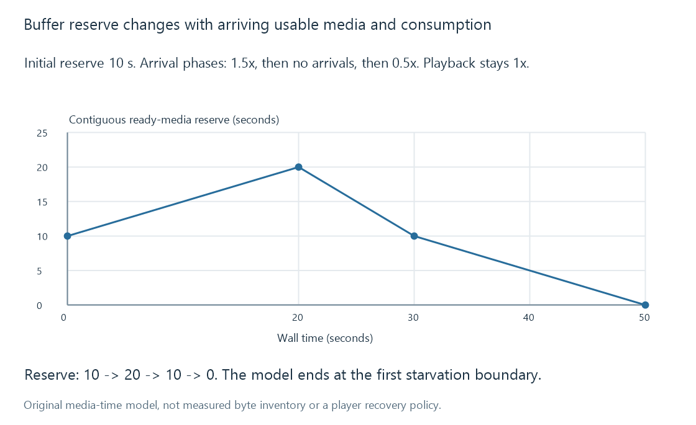
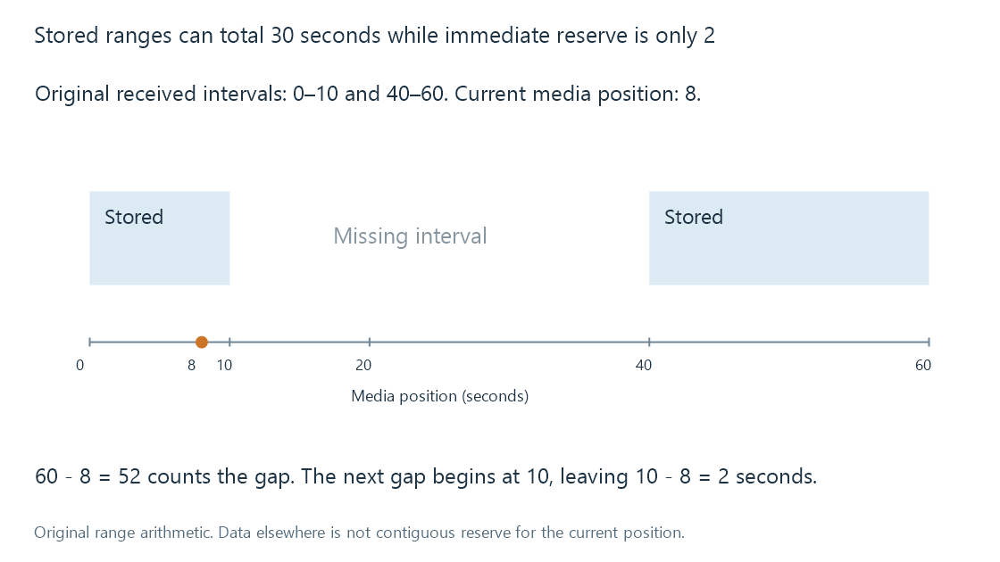

Buffering, ready media and playback reserve
Buffering retains media ahead of use, with continuity, readiness and consumption rate determining how much playback reserve the stored data actually provides.
A buffer stores media for later use. Playback reserve is the portion that can support the upcoming presentation without waiting for additional work.
Those are related but different quantities. A player can retain thirty seconds of media in total and still have only two seconds before a gap. A server can have output on disk that the player has not received.
Several queues can exist at once
| Location | What can be retained |
|---|---|
| Source reader | Input bytes awaiting container/stream processing |
| Server conversion path | Frames or encoded output waiting for the next stage |
| Generated output storage | Media produced ahead of the viewing position |
| Client input buffer | Received media for later decoding |
| Client presentation queues | Decoded pictures or samples waiting for their deadlines |
A reserve measure needs to identify the queue and the readiness being counted. “Buffered for sixty seconds” without that scope can conceal the distinction between generated output, received data and decoded presentation.
Emby's production position and the client's reported playback position describe useful session state. Their difference does not directly measure every client queue.
A ready-media model
For an original simple model, count contiguous usable media seconds ahead of consumption:
change in reserve = arriving ready-media rate - consumption rate
Assume ordinary playback at one media second per wall second and an initial ten-second reserve.
| Wall-time interval | Ready-media arrival rate | Reserve change |
|---|---|---|
| 0–20 seconds | 1.5 media seconds/s | Ten seconds gained |
| 20–30 seconds | No new ready media | Ten seconds used |
| 30–50 seconds | 0.5 media seconds/s | Ten seconds used |
The reserve rises from 10 to 20, returns to 10, then reaches zero at wall second 50.

The graph assumes steady consumption until the first empty point. After that point, uninterrupted playback no longer follows the model; a player must wait, recover or choose another policy.
A larger initial reserve can postpone starvation. It cannot make a sustained arrival deficit disappear.
Stored ranges can have a gap
Suppose an original received-data view contains media intervals 0–10 and 40–60 seconds. Playback is at second 8.
There are thirty seconds stored across the intervals, but only two seconds remain before the next gap. The latest stored endpoint is 60; subtracting the playback position gives 52, which incorrectly counts the missing interval as reserve.

HTML media playback exposes buffered ranges rather than requiring one universal continuous interval. Seeking, fetching policy and discarded data can produce another set over time.
The range still describes a media-time availability view, not a promise that every picture can start independently at every point. Codec configuration and reference dependencies remain relevant to seeking.
Bytes need their rate context
At a constant 6 Mbit/s, five media seconds represent 30 million payload bits. Before playback starts, a path supplying 8 Mbit/s would take an ideal 3.75 seconds to fetch that amount.
Once playback starts, some arrivals replace consumed data rather than increasing reserve. Assuming the same constant media rate, the net ready-media gain is 8/6 - 1, about one third of a media second per wall second.
Variable bitrate changes the conversion between byte inventory and media-time reserve. A five-second low-complexity passage can occupy fewer bytes than another five-second passage.
A bitrate burst can exhaust a finite byte inventory
Use another original model: average demand is 6 Mbit/s over a sixteen-second cycle, made of four seconds at 12 Mbit/s and twelve seconds at 4 Mbit/s.
The arithmetic average is:
(4 × 12 + 12 × 4) / 16 = 6 Mbit/s
A constant 8 Mbit/s delivery rate exceeds that average. But during the 12 Mbit/s burst, an initial twelve-million-bit buffer loses four million bits per second and reaches zero after three seconds.
The burst is four media seconds long, so the stated reserve is insufficient for uninterrupted presentation of that interval. The model stops at its first empty point; a real stalled player does not keep consuming nonexistent bytes.
This is why an average-rate comparison and a finite buffer need to be considered together. It is not an Emby network estimate or a measured movie bitrate trace.
Buffer policy changes waiting and resource use
Waiting for more initial data can increase startup delay while providing another reserve. Retaining more received media can support later navigation but uses memory or storage. Discarding old data changes the available range set.
A pause in playback reduces consumption and can allow reserve to grow. A producer throttle can reduce arrivals when sufficient server-side output exists. Those controls apply at different points in the path.
None of these queue changes establishes decoder compatibility or repairs an unavailable resource. They manage when usable data is retained and consumed.
See Also
- Real-time transcoding and playback deadlines
- Transcode throttling and producer lead
- Playback stalls and unavailable next media
- Seeking during streaming
- Playback startup delay